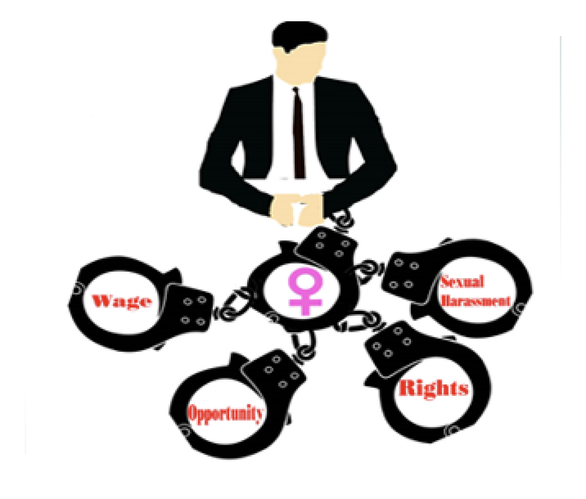

Work
Final project from MMP 100. This image shows how men have some much power over the things women do.
14 Ways Women are not Equal to Men
- Retired women are twice as likely as men to live in poverty because once women meet their retirement age men will have $11,000 more than women
- Woman of all ages are more likely than men to live below the poverty. More than 15.5% of women are more to likely to live in poverty in the U.S than men which is 11.9%. There is more than a billion women living in poverty
This the summary of the article “14 Ways Women still are not Equal to Men” in bullets.
About me
My name is Anabel Perez. I live in the Bronx but, I was born in Manhattan. I’ve been taking college classes since highschool and I have 44 college credits. I’m Dominican. My favorite food is mexican food.